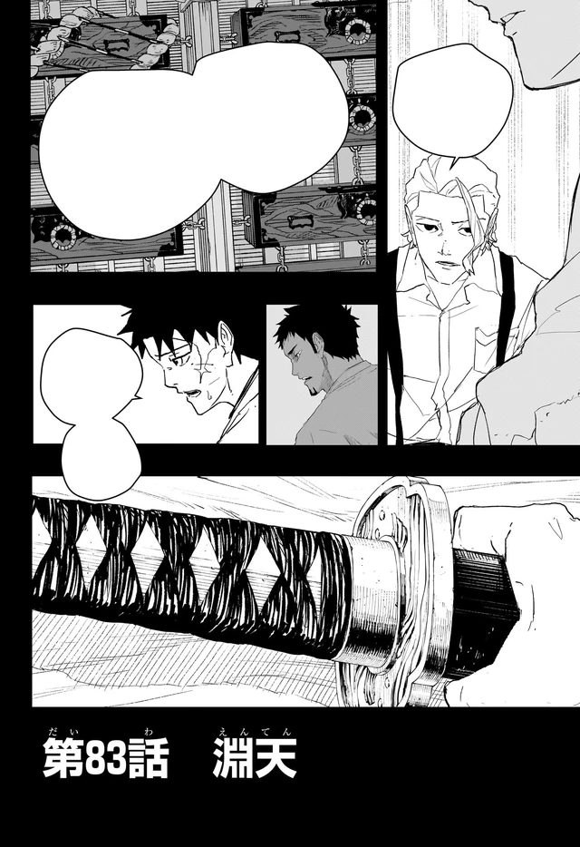

Overview
Samura took his own eyes to sharpen everything else. He fights by sound, sheathed, at a speed the rest of the bearers treat as weather. Tobimune was built as a support sword: feathers, an owl over the country, flames that heal the wielder and burn everyone else. After the war he taught those flames to raise the dead.
The pact
Guilt over the Malediction puts him in a room with Yura. The deal looks like traitor-work: kill the other bearers, return the blades, kill the Sword Master, then die with the Hishaku. What he actually does to Uruha is a contract-breaking mercy. He erases himself from Iori because he knows what “hero” meant on the island.
Chihiro beats him with purpose, not pace. Samura heals his eyes, sees his daughter, and spends the last of his life on Magatsumi. That is the Iai style as ethics: one cut, no extra motion.
Personality
He is a Buddhist who tried to kill the war by killing the men who won it. Guilt over the Malediction is the whole remaining personality. He took his own eyes to sharpen everything else, then blinded himself a second time as a father: the Masumi erased him from Iori because he knew what “hero” meant on the island. He will not let a daughter inherit a myth he helped print.
The pact with Yura looks like traitor-work. Kill the other bearers, return the blades, kill the Sword Master, then die with the Hishaku. What he actually does to Uruha is a contract-breaking mercy. Suzaku, not betrayal. He is fastest of the six and he spends that speed on exits, Crow to reposition, Owl to listen, flames that can raise the dead so a friend can walk out of a morgue. The Iai style as ethics: one cut, no extra motion. He applies it to his own life last.
Chihiro beats him with purpose, not pace. That is the sentence Samura has been waiting for without knowing it. Once Enten’s brief is said out loud, the seventh blade exists to end the others, he opens his eyes. He sees Iori. He spends the rest of himself on Magatsumi. The man who tried to erase the war from a child’s memory dies holding the war in place so someone else can leave.
Abilities
Iai White Purity Style, Itsuo Shirakai’s speed school. Eyes closed is the curriculum, not theater. Samura fights by sound, sheathed, at a speed the rest of the bearers treat as weather. He and Uruha are the famous students. Iori inherited the house style; Chihiro copies it. Samura is the one the others measure against.
Tobimune was forged for support. Crow is a swap with a feather; External Crow moves other people. Owl is reconnaissance at the scale of a country, he hangs it in the sky and listens for Enchanted Blade noise, range versus resolution. Suzaku began as selfish fire: heal the wielder, burn everyone else. After the war he taught those flames to raise the dead. External Suzaku heals the world. He uses it on Uruha, on Chihiro, on a hotel Hiruhiko had already started to unmake.
A Lifelong Contract shuts innate sorcery off. Samura’s specialty is cutting the contract without cutting the person. Uruha wakes in a morgue with Crimson Recital limping back. That is the support blade doing support. Black Suzaku is the life-for-power rule with the lights off. It is strong enough to argue with Malediction. He spends it holding Magatsumi so Chihiro can leave. Tobimune passes to Iori.
Story role
Samura is locked in a Sanso after the raid, like the other surviving wartime bearers. The Sword Bearer Assassination arc is his book. Chihiro and Hakuri are sent to keep Uruha alive. Hiruhiko boards the train. At Senkutsuji, Hakuri returns Tobimune. Samura clears the temple and then cuts Uruha down. Volume 7’s jacket, night blue, sunglasses, hotel dark, sells the false death. The Masumi take Iori to the Kyoto Bloodshed Hotel. Owl hangs over the country.
The hotel is where Iori’s seal breaks and Hiruhiko wrecks the upper floors with Play. Samura arrives. Feathers, banquet, goldfish. Chihiro tells him the truth Kunishige left in Enten. Chapter 83 is the brief said out loud. Samura heals his eyes. Volume 9 is the single-figure Enten jacket because that fight is the argument the war was waiting for.
In Tokyo he meets Yura with Chihiro. Yura spends Magatsumi without drawing it. Yura, losing, gives the body to Akemura. Magatsumi breaks Enten. Samura’s flames go black. He buys Chihiro a corridor and dies holding Magatsumi back. Tobimune goes to Iori. That is the last Iai cut: no extra motion, no leftover myth for the daughter to carry except the sword itself.
Relationships
Iori is the daughter he tried to parent and a war criminal in the same house. After her mother died, Yura came to the door with the truth of the Malediction. Samura had the Masumi, Ro, Moku, Sumi, erase him from Iori’s memory and sent her away. The spell frayed because she still loved him. It broke when she moved to shield a classmate. He opens his eyes to see her. Then he spends himself so she does not have to watch the rest.
Uruha is the other famous Iai student and the first mercy. The “kill” at Senkutsuji is Suzaku: kill the contract, keep the man, pull Kumeyuri off the board. Chihiro is the son of the smith, the one who finally says what Enten was for. Yura is the man at the door and the man in the basement, the Hishaku lead who signed the private contract and then changed the math after speaking to Akemura.
Akemura is the colleague from the island, the patriot the other bearers could not stop. The Lifelong Contract knot means Samura cannot simply execute the Sword Master without dying with the rest. Kunishige forged him a support sword. Eighteen years late, the support sword does the job. The Masumi serve him until he frees them. Hakuri is the reason Tobimune arrives in his hand at the temple.
Notes
Blind swordsman. Fastest of the six. Iai White Purity. Tobimune. Volume 6’s jacket puts him in a yin-yang with Uruha, Chihiro, and Hiruhiko in the blood center. Volume 7 is night battle: Samura, Chihiro, Iori. Volume 9 is Enten versus Tobimune. Chapter 60’s elevator doors are the still English videos pause for the apparent betrayal. Chapter 83 is the brief.
He dies holding Magatsumi. Tobimune passes to Iori. The Malediction essay is the guilt on the page. Official chapters: VIZ / MANGA Plus. Cour 1 ending at those elevator doors is a theory, not a confirmation.
The school around him
Kiri Shirakai is the founder’s granddaughter, raised in part by Samura and Uruha, carrying a two-meter odachi into a curriculum that told her women cannot. Itsuo still texts from the mountains. Iori is the daughter whose memories he erased. Chihiro copies the closed-eye draw off Kuguri, then off the house, then off Samura himself. The school is larger than the fastest bearer. Black Suzaku is dark power: he spends his life, stalls Magatsumi’s drain, sends Tobimune to Iori, dies. The Iai page is the curriculum. The Tobimune kit is the support blade he was given because Kunishige thought someone should keep other people alive.